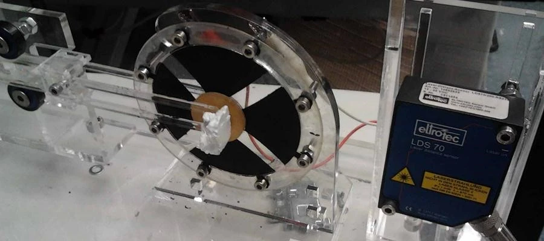
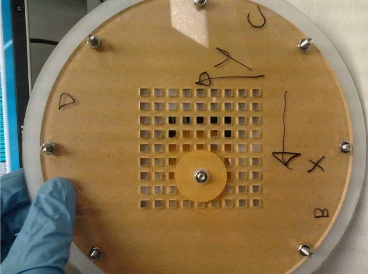
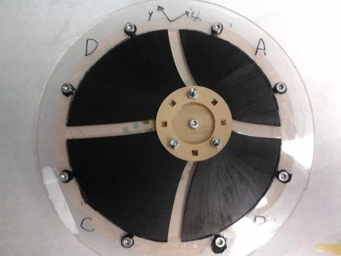

Abstract
During a short stay at the Bioengineering Institute of the University of Auckland, I designed, manufactured and characterized a proof of concept two-DOF sensing device. The aim was to develop a sensor technology that can comply with soft-robots.
Publications & Resources
📄 Article (IEEE): Two-degree-of-freedom Dielectric Elastomer Position Sensor Exhibiting Linear Behavior📄 Article (arXiv): A. Girard, J. P. L. Bigué, B. M. O'Brien, T. A. Gisby, I. A. Anderson and J. Plante, "Soft Two-degree-of-freedom Dielectric Elastomer Position Sensor Exhibiting Linear Behavior," 2024.
Project Media

Prototype

Prototype

Prototype

Prototype